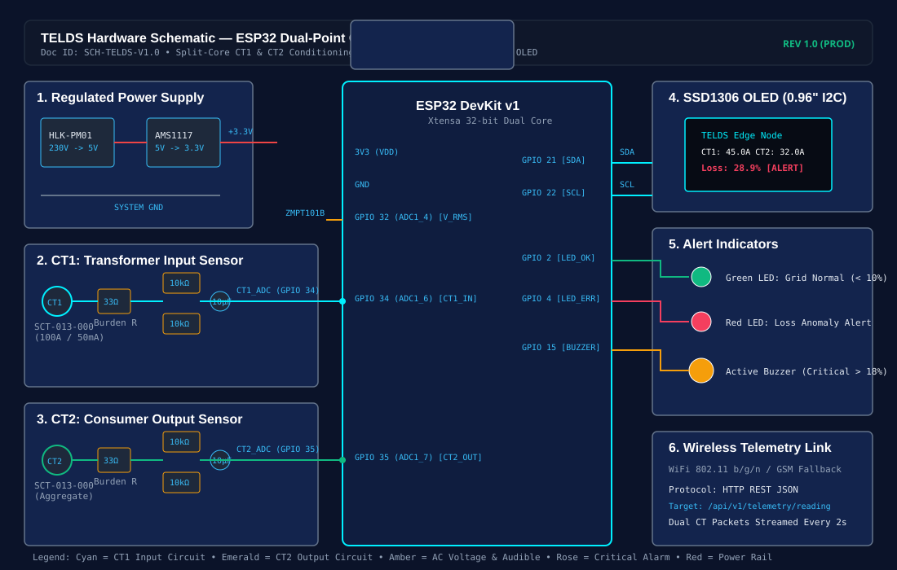
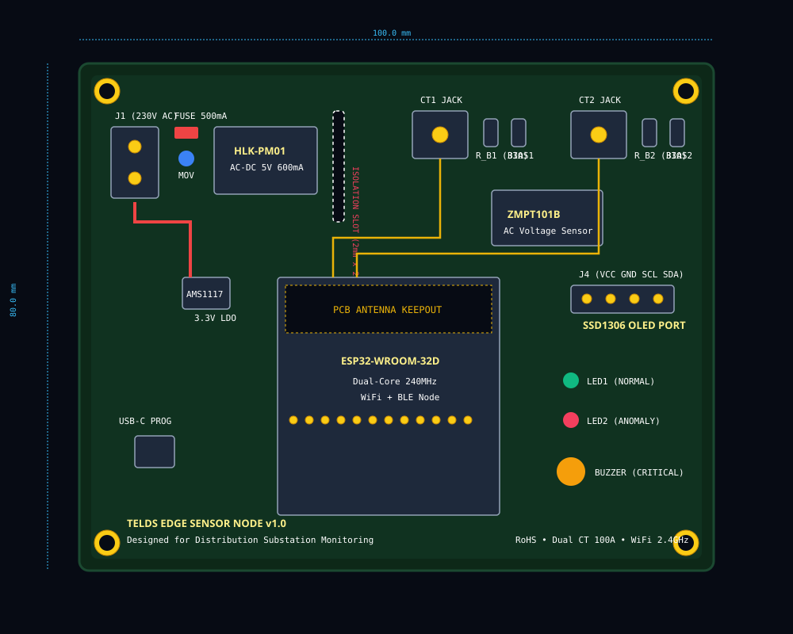
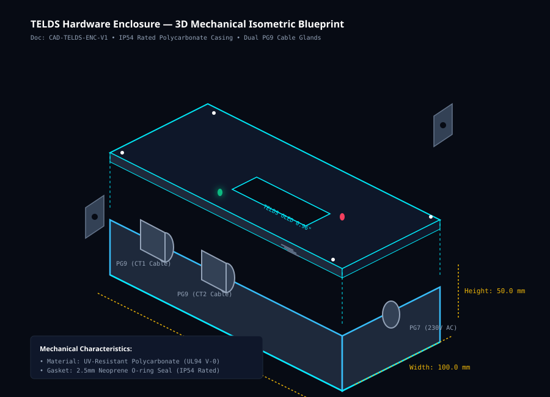

Transformer Input vs Consumer Output & Loss %
Time interval synchronization. Peak hours (19:00 - 22:00) highlighted with amber dots.
Peak-Hour Dynamics (19:00 - 22:00)
Evening SurveillanceLoss Priority Ranking
Field Dispatch QueueDistribution Feeder Segment Loss Localisation
Multi-point energy conservation balancing across consecutive pole nodes (P0–P1, P1–P2, P2–P3, P3–P4). Distinguishes conductor resistance line losses and sensor uncertainty from abnormal segment discrepancies.
Feeder Topology & Measurement Nodes (P0 → P4)
Click any segment to view line inspectionSegment Multi-Point Accounting Ledger
Synchronized readings across consecutive nodes| Segment | Upstream Node | Downstream Node | Upstream (kWh) | Downstream (kWh) | Branch (kWh) | Discrepancy (Δ) | Loss % | Threshold | Status | Action |
|---|
Abnormal discrepancy of 18.07% (25.8 kWh) exceeds effective threshold (8.0%). Suspected location for field inspection.
Unauthorised Power Tapping Detection System
An ESP32-based controller compares incoming (CT1) and outgoing (CT2) current values, calculates the discrepancy, and checks it against a configurable threshold. When a persistent discrepancy exceeds the threshold, the system generates a wireless alert and identifies the monitored line as suspicious.
Line balance is within safe threshold limits. No persistent discrepancy detected.
Controller Configuration
Two Current Measurement Points (Analog Inputs)
{
"device_id": "ESP32-TELDS-NODE-01",
"monitored_line": "FEEDER-11KV-LINE-SEC-308A",
"status": "NORMAL",
"incoming_ct1_a": 42.0,
"outgoing_ct2_a": 40.0,
"discrepancy_pct": 4.76,
"threshold_pct": 10.0,
"alert_generated": false
}
Ready for Hardware Manufacturing & Field Assembly
The virtual prototype design is fully validated with production-ready physical engineering deliverables.
Hardware Engineering & Design Documents
Complete digital blueprints for circuit schematic, PCB layout, 3D enclosure model, and BOM.
1. Circuit Schematic (SCH-TELDS-V1.0)
View Vector SVG ↗
Features dual SCT-013 conditioning with 33Ω burden resistors, 1.65V DC midpoint bias rail, ZMPT101B AC voltage sensor, BAT54S transient clamp protection, and ESP32 pinouts.
2. 2-Layer PCB Layout (100mm × 80mm)
View Vector SVG ↗
Includes 2mm high-voltage isolation milling slot, star grounding for analog ADC lines, antenna keepout zone, and screw terminal blocks for field installation.
3. 3D Weatherproof Enclosure (IP54)
View Blueprint ↗
Parametric OpenSCAD design (140×100×50mm) in UV-stabilized Polycarbonate. Features dual PG9 cable glands for CT clamps, acrylic OLED bezel, and mounting flanges.
4. Bill of Materials (BOM) Summary
Full BOM Doc ↗Batch production volume drops cost to $21.80 USD at 100+ units.
Distribution Infrastructure Mapping
Substations, 11kV Feeders, and Connected Consumer Meters
Residential DT 308 (Green Park)
Commercial Transformer 204
Distribution Transformer 101
Meter Readings CSV Ingestion
Upload synchronized CSV files to compute energy differences & detect anomalies.
Anomaly Alerts & Field Inspection Desk
Review flagged energy differences, assign field inspection, and update investigation logs.
Critical Evening Discrepancy on Residential DT 308
Loss rate reached 34.23% (17.8 kWh unaccounted). Technical loss allowance: 3.12 kWh. Unexplained difference: 14.68 kWh.
Elevated Loss Alert on Commercial DT 204
Loss rate 16.4% on City Center Commercial Transformer. Unaccounted energy: 15.6 kWh.
Energy Audit & Regulatory Reporting
Export compliant audit sheets with separated technical vs unexplained loss accounting.
| Timestamp | Transformer | Input (kWh) | Consumer (kWh) | Diff (kWh) | Loss % | Unexplained (kWh) | Peak Hour | Status |
|---|---|---|---|---|---|---|---|---|
| 2026-10-10 20:00 | TX-RES-308 | 52.0 | 34.2 | 17.8 | 34.23% | 14.68 | Peak | Investigating |
| 2026-10-10 19:00 | TX-RES-308 | 45.0 | 32.0 | 13.0 | 28.89% | 10.30 | Peak | Alert Logged |
| 2026-10-10 12:00 | TX-RES-308 | 28.0 | 26.4 | 1.6 | 5.71% | 0.00 | No | Normal |
Google Stitch AI Design Screens
High-fidelity SCADA digital twin screens imported directly via Google Stitch API.